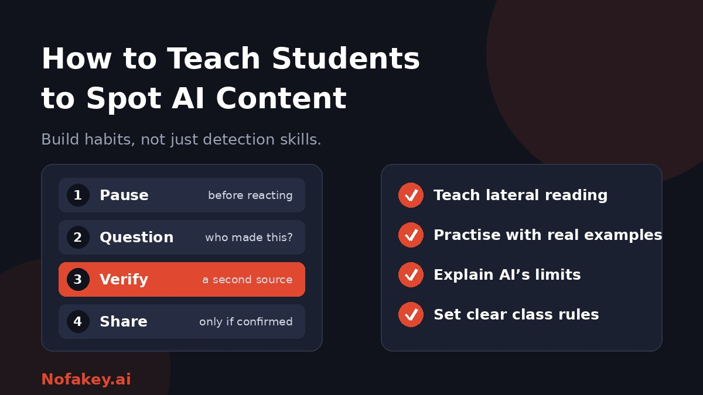

Students meet AI-made images, videos, voices and text every day, often without knowing it. Teaching them to spot it sounds simple, but the old advice, such as "look at the hands," ages quickly. The more durable lesson is how to check before trusting. This guide gives teachers and parents a practical way to build that habit.
Why "spot the AI" is the wrong goal on its own
It is tempting to hand students a checklist of clues. But clues like extra fingers, garbled text or odd lip sync get fixed as tools improve, and real photos can have glitches too. Students who rely on spotting flaws may wrongly trust a good fake and wrongly doubt real content.
A better goal is sound judgment: knowing how to decide what to believe, even when you cannot tell how something was made.
Teach one simple routine
Give students four steps they can remember and use anywhere.
- Pause. Notice strong feelings such as shock, anger or excitement. Content designed to spread often triggers them.
- Question the source. Who made this? Who benefits if I believe or share it? Is there a name, a date and an original post?
- Verify. Leave the page and look for the same claim from other reliable sources. This habit is often called lateral reading. For images, a reverse image search can show where a picture first appeared.
- Share carefully. If it cannot be confirmed, do not pass it on. Saying "I'm not sure yet" is a valid response.
What students can look for, and why it is not enough
| Type | Things that may be clues | Why they are unreliable |
|---|---|---|
| Images | Odd hands, garbled text, warped backgrounds, too-smooth skin | Tools keep improving, and real photos can look odd too |
| Video | Lip sync slips, unnatural blinking, glitches around the face | Short or low-quality clips hide flaws |
| Audio | Flat emotion, odd pacing, missing breaths | Cloned voices can sound very natural |
| Text | Generic wording, no personal detail, confident mistakes, made-up sources | Good human writing can look generic, and edited AI text can look human |
Present clues as reasons to look closer, never as proof. For students interested in the technology, our guide on what a deepfake is and how to protect yourself is a useful companion.
Be honest about AI detectors
Students will hear that detectors can "catch" AI. A good lesson lets them test that claim. Show that results can differ between tools, that formal writing can be wrongly flagged, and that edited AI text can slip through. The takeaway: a score is a clue to investigate, not a verdict. See are AI detectors accurate? for background, and how AI watermark detection works for how hidden signals fit in.
Classroom activities that work
- Real or AI? with a twist. Show a mix of real and AI images. After students vote, reveal the answers and discuss how many they got wrong, and why guessing is risky.
- Trace the source. Give a viral claim and have teams find where it started and who first reported it.
- Fact-check a chatbot. Have students ask an AI tool a question in your subject, then verify each claim and mark what is wrong, unsupported or correct.
- Hunt the invented source. Provide an AI-written paragraph with citations and have students check whether each reference exists and says what is claimed.
- Improve the output. Students critique and rewrite an AI answer, adding evidence and original thinking.
- Make and label. Students create a short AI-assisted piece and write an honest disclosure label.
A 45-minute lesson plan
| Time | Activity |
|---|---|
| 0–5 min | Hook. Show one convincing AI image or clip. Ask: "How could we know if this is real?" |
| 5–15 min | Teach the routine. Introduce pause, question, verify, share with one worked example. |
| 15–30 min | Practice. Small groups investigate two items using lateral reading, and record their evidence. |
| 30–40 min | Discuss. Why does misleading content spread fast? What clues failed? What would you do differently? |
| 40–45 min | Exit ticket. Each student writes one personal rule for sharing content responsibly. |
Adapting by age
| Age group | Focus |
|---|---|
| Younger children | "Who made this?" and "How do we know it is true?" Use simple sorting games, and teach them to ask a trusted adult. |
| Middle years | The four-step routine, reverse image search, and spotting emotional hooks. |
| Older students | Lateral reading, evaluating sources, how detectors work and fail, deepfakes, and academic integrity. |
Why subject knowledge matters
Students who know a topic well spot errors faster, because they notice when a claim does not fit what they have learned. Teaching AI literacy does not replace teaching content. A strong grounding in your subject is part of what makes verification work.
Set clear rules for AI use in class
- State what is allowed: for example brainstorming and grammar help, but not generating a full assignment.
- Require disclosure. Our guide on how to label AI-generated content has wording students can use.
- Ask for process evidence, such as notes, drafts and version history.
- Check, don't accuse. Use conversation and process, not a detector score alone, to discuss concerns.
- Make it safe to ask. Students who feel overwhelmed are more likely to hide AI use.
For parents and carers
- Talk about what you see online and ask, "How could we check that?"
- Model pausing before sharing, and admit when you are not sure.
- Warn children that voices and videos of people they know can be faked, and agree a family code word for urgent requests.
- Encourage them to come to you if something online feels frightening or wrong.
Conclusion
The most lasting way to teach students to spot AI content is to teach them how to verify: pause, question the source, check elsewhere, and share carefully. Be honest that visual clues and detectors have limits, practise on real examples, and set clear, fair rules for AI use. Want a quick first read on a suspicious claim to use as a classroom example? Try our free checker, and find more guides on the Nofakey.ai blog.
Frequently asked questions
What is the best way to teach students to spot AI content?
Teach a repeatable verification routine rather than a list of visual tells: pause, question the source, verify with a second source, and only then share. Practise it on real examples.
Can students reliably spot AI-generated images and videos by eye?
Not reliably. Clues such as odd hands, garbled text or lip-sync errors help sometimes, but they fade as tools improve. Source checking is a more dependable skill.
Should students use AI detectors?
They can be used as one clue in a lesson on how detectors work, but students should learn that scores are not proof and can be wrong in both directions.
At what age should media literacy about AI start?
Simple versions can start in primary school, such as asking who made something and how we know it is true. Complexity can grow with age.
How do I teach responsible AI use alongside spotting it?
Set clear class rules on allowed AI use, require disclosure, and have students check and improve AI output so they practise judgment, not just detection.
Want a quick first read on a claim or message?
Run it through the checker